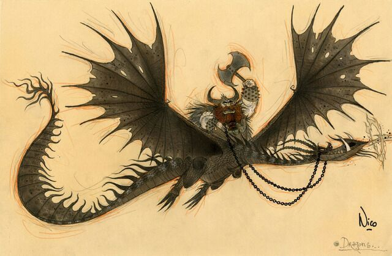
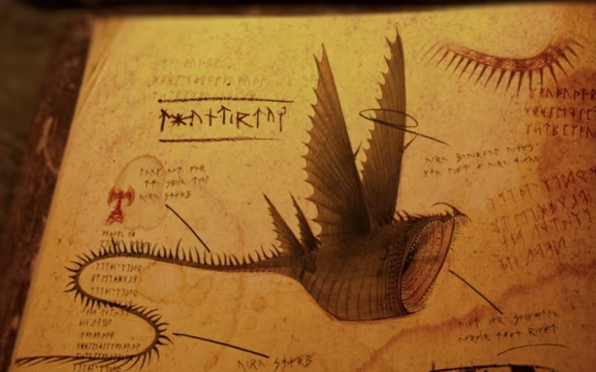
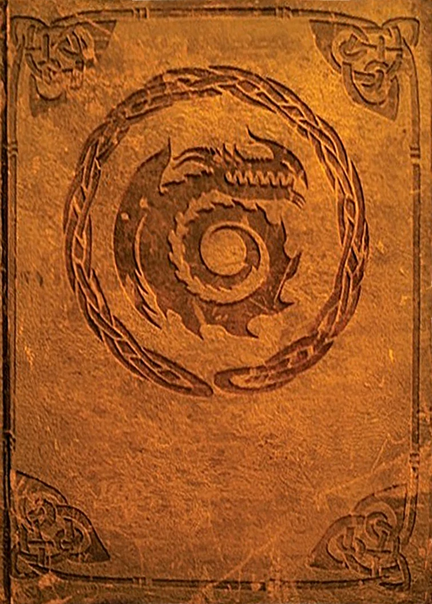

О драконах
Драконы (англ. Dragons) — это особое семейство теплокровных рептилий, обладающих разумом: например, многие драконы понимают человеческую речь и обладают довольно специфическими навыками в зависимости от вида.
Делятся на типы, которые влиляют на внешность дракона, и на классы, которые в свою же очередь подразделяются на отдельные виды и подвиды. К примеру Ужастное чудовище - класс кочегаров, громобой - водный (приливный) класс и кривет - класс разящие:


Классфикация Борка

Принадлежность к классу определяется наличием у драконов каких-либо общих признаков или их полным отсутствием. Например, класс «Кочегары» состоит из драконов, выделяющих больше огня, чем другие.
Классы:
Борк Отважный создал книгу драконов, где подробно описал каждого из найденных чудовищ.
Легендарные драконы в мультивселенной "как приручить дракона"
Это король драконов Великий смутьян (Bewilderbeast).
Он относится к классу водных драконов. Огромный дракон дышущий ледашками.
Живёт в холодных океанических водах. Защищает подданых драконов, кормит их, предоставляет место для жилья.
Королева драконов Красная смерть (Red Death).
Она относится к классу кочегаров. Живёт в вулканах, не может выжить без тепла. Создаёт что-то вроде улья и кормиться
за счёт своих подданых.
Это Вополь смерти, повелитеть подземного мира. Огромный белый дракон, который относится к классу камнееды.
Такие как он рождаются раз в 100 лет и несут за собой невероятные разрушения и бедствия.
Он относится к классу камнеедов. Живёт под землёй, пожирает целые острова вместе со своими поддаными шёпотами смерти